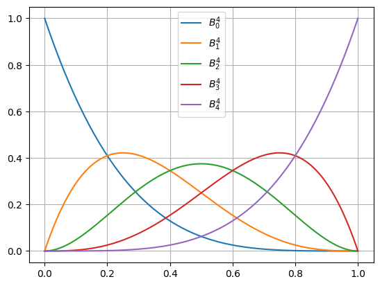
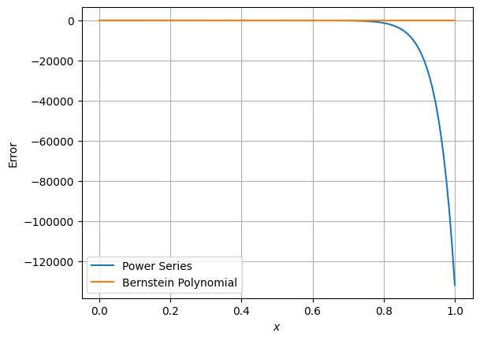

Bernstein Polynomials#
Bernstein polynomials are defined as a sum of Bernstein basis. The key property of these is that they are very good avoiding numerical errors during evaluation.
- class interplib.Bernstein1D(coefficients: array_like)[source]#
Class used to represent polynomials as a series of Bernstein basis.
Bernstein basis polynomials of order \(n\) are \(B^n = \left\{ B^n_0, \dots, B^n_n \right\}\) is defined as:
\[B^n_k = {n \choose k} t^k (1 - t)^k = {n \choose k} t^k \sum_{i = 0}^{n - k} {n - k \choose i} (-t)^i\]- Parameters:
coefficients (array_like) – Coefficients of the Bernstein basis. Their order will be equal to the number of coefficients.
Examples
As a quick example, first let us plot some of the Bernstein basis polynomials:
>>> import numpy as np >>> from matplotlib import pyplot as plt >>> from interplib import Bernstein1D >>> >>> order = 5 >>> xplt = np.linspace(0, 1, 128) >>> plt.figure() >>> for i in range(order): ... coeffs = np.arange(order) == i ... basis = Bernstein1D(coeffs) ... plt.plot(xplt, basis(xplt), label=f"$B^{order - 1}_{i}$") >>> plt.legend() >>> plt.grid() >>> plt.show() >>> # No output for doctest
To show the key strength of these polynomials, let’s check at how they fare at computing high order polynomials. As such, let’s fit a polynomial to a test function \(f(x) = 3 \sin(5 \pi x)\) with the order of 30.
>>> from interplib import Polynomial1D >>> >>> order = 30 >>> sample_fn = lambda x: 3 * np.sin(5 * np.pi * x) >>> sample_points = (1 - np.cos(np.linspace(0, np.pi, order))) / 2 >>> poly = Polynomial1D.lagrange_nodal_fit( ... sample_points, sample_fn(sample_points) ... ) >>> bern = Bernstein1D.fit_nodal( ... sample_points, sample_fn(sample_points) ... ) >>> plt.figure() >>> err_pwr = poly(xplt) - sample_fn(xplt) >>> err_brn = bern(xplt) - sample_fn(xplt) >>> plt.plot(xplt, err_pwr, label="Power Series") >>> plt.plot(xplt, err_brn, label="Bernstein Polynomial") >>> plt.gca().set(xlabel="$x$", ylabel="Error") >>> plt.legend() >>> plt.grid() >>> plt.show() >>> print("Power series max error:", np.max(np.abs(err_pwr))) >>> print("Bernstein polynomial max error:", np.max(np.abs(err_brn)))
Power series max error: 131848.51832412547 Bernstein polynomial max error: 2.275957200481571e-14
- __call__(x: npt.ArrayLike, /) npt.NDArray[np.float64][source]#
Evaluate the polynomial at specified locations.
- Parameters:
array_like – Positions where the polynomial should be evaluated.
- Returns:
Values of the polynomial at specified positions. It will have the same shape as the input.
- Return type:
array
- classmethod fit_nodal(nodes: array_like, values: array_like) Self[source]#
Fit the polynomial to specified nodes exactly.
- Parameters:
nodes (array_like) – Array of nodes at which the values are given.
values (array_like) – Values of the function at the given
nodes.
- Returns:
Bernstein polynomial which exactly matches the specified points.
- Return type:
Self
- classmethod from_power_series(series: npt.ArrayLike | Polynomial1D) Self[source]#
Create a Bernstein polynomial representation of a power series polynomial.
- property antiderivative: Bernstein1D#
Analytical antiderivative of the polynomial.
- property coefficients: npt.NDArray[np.float64]#
Coefficients of the Bernstein basis.
- property derivative: Bernstein1D#
Analytical derivative of the polynomial.